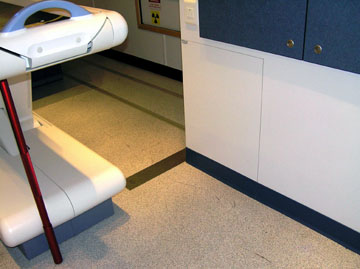
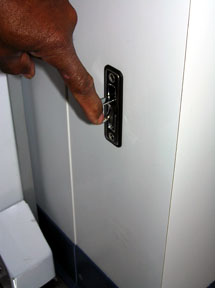
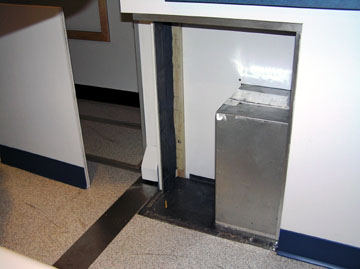

Operating Documentation
Direction 5193755-800, Rev# 8
BrightSpeed (Ltd. Access) Service Methods - Adv
Operating Documentation |
| Required Persons | Preliminary Reqs | Procedure | Finalization |
|---|---|---|---|
| 2 | Timing Not Applicable | 30 mins | 30 mins |
This procedure is used when replacing scanner components in European mobile units manufactured by Medical Coaches, Inc., also known as Medicoach vans. To get larger components out of and into the scan room, you must remove not only equipment covers, but also a section of the wall on the right side of the room as you walk into it. Removal of this section is intended to give access to the wheel well area, but it also gives more width in the room for maneuvering components.
| Item | Qty | Effectivity | Part# | Manufacturer | |
|---|---|---|---|---|---|
| Flat screwdriver | 1 | - | - | - | |
| Gloves | 2 pair | - | - | - | |
| Door stop, such as rubber wedge | 1 | - | - | - | |
| Possible Lead Poisoning | |
| Lead on back of wheel well access panel can be absorbed by bare skin. | |
| Wear gloves when handling access panel. |
Use door stop to hold open the door to the scan room.
Remove the Table base cover on the tube side of the Gantry.
Lower Table to home position.
Remove all appropriate Gantry covers for the component to be replaced. Walk covers around the Table and place outside the scan room, for example, in the patient waiting area.
| NOTE: | Raise and lower the Table and move it in and out as needed to remove covers. |
Raise Table to maximum height and move into Gantry as far as possible.
Remove the three (3) screws to the wheel well access panel.
| NOTE: | The distance between the Table base cover and the wheel well access panel is only 533 mm (21”). With the cover and access panel removed, the distance increases to 749 mm (29.5”). |
Illustration 1: Access Panel - View from Room Doorway

Illustration 2: Access panel - End View with Screws

| Possible Lead Poisoning | |
| Lead on back of wheel well access panel can be absorbed by bare skin. | |
| Wear gloves when handling access panel. |
Use pull tab to pull access panel out. Using gloves, you may need to pull on the back edge of the panel to move it out.
Illustration 3: Access panel - pull tab

Illustration 4: Access Panel Removed (shown to the Left)

Remove old scanner component from scanner and install new component:
Remove old component from scanner per applicable instructions.
Using two people, one in front and one in back, carefully maneuver old component between Table and side wall and out of scan room. Exercise caution since, depending on the component, this may be a tight fit.
Using two people, one in front and one in back, carefully maneuver new component into scan room and between Table and side wall. Exercise caution since, depending on the component, this again may be a tight fit.
Install new scanner component per applicable instructions.
| Possible Lead Poisoning | |
| Lead on back of wheel well access panel can be absorbed by bare skin. | |
| Wear gloves when handling access panel. |
Replace wheel well access panel.
| NOTE: | If desired (for example, for comfort in cold weather) this step can be done after the new component is moved in past the access panel but before the component is installed. |
Fasten wheel well access panel with the 3 screws that were removed.
Replace all Table base and Gantry covers.
Remove the door stop.
Clean up any debris.